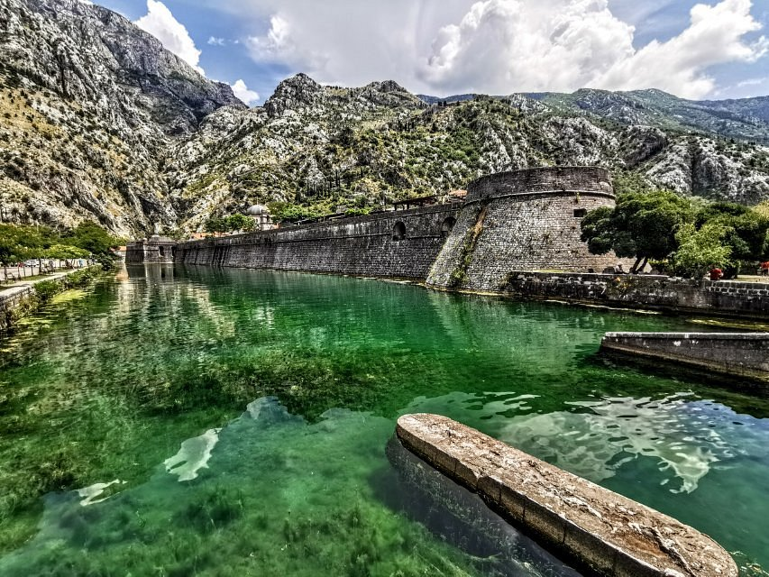

Котор
Описание:
Котор - удивительный город, расположенный у подножия гор и на берегу одноименного залива. Его каменные улочки, средневековые стены и многочисленные церкви создают неповторимую атмосферу.
Достопримечательности:
- Старый город Котора (Stari Grad)
- Которская крепость (Fortress of Kotor)
- Церковь Святого Трифона


Будва
Описание:
Будва - живописный курорт, известный своими пляжами и богатой историей. Он предлагает сочетание старинных памятников и современного отдыха.
Достопримечательности:
- Старый город Будвы
- Остров Святого Николая
- Адриатическое море и знаменитый пляж Могрен


Дурмитор
Описание:
Национальный парк Дурмитор - рай для любителей природы и активного отдыха. Здесь вас ждут величественные горные пейзажи, кристально чистые озера и пешеходные маршруты.
Достопримечательности:
- Бледерско озеро
- Джурджевича тара
- Пик Боботов Кук


Пераст
Описание:
Этот живописный городок на побережье Боко-Которского залива привлекает своими старинными зданиями и красивыми видами. Пераст является национальным культурным наследием Черногории.
Достопримечательности:
- Остров Госпа од Шкрпела
- Кампана 
- Римска церковь Святого Николая


Скадарское озеро
Описание:
Скадарское озеро - самое крупное пресноводное озеро на Балканах. Это место известно своей уникальной природой и разнообразием флоры и фауны.
Достопримечательности:
- Манастир Ком
- Птичьи заповедники
- Рыбацкие деревушки